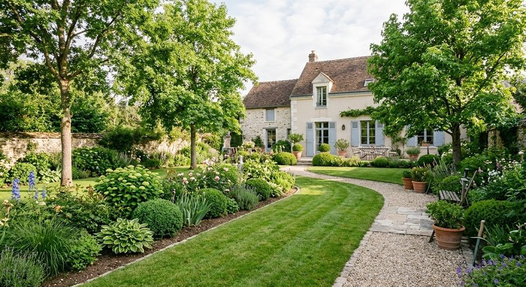

Des services de jardin, du suivi régulier au nouveau tracé.
Trois grandes familles de prestations, toutes proposées sur devis. Racontez-nous votre jardin, nous vous répondons avec une proposition adaptée.



Entretien de jardin
Un jardin qu'on suit reste net, sain et agréable à vivre. Selon votre terrain, l'entretien peut prendre des formes très différentes : c'est pourquoi chaque demande est étudiée avant d'être chiffrée.
Sujets à aborder avec nous :
- Pelouse et tonte
- Haies et arbustes
- Massifs et plantations

Aménagement paysager
Terrasse, allée, muret : l'extérieur d'une maison se pense comme un prolongement de ses pièces. AS VERT intervient dans les services d'aménagement paysager et étudie votre projet avec vous.
Sujets à aborder avec nous :
- Terrasses et circulations
- Allées et revêtements extérieurs
- Murets et ouvrages de pierre
Les photos de cette page illustrent des types de travaux ; ce ne sont pas des réalisations d'AS VERT.

Création d'espaces verts
Vous venez d'emménager, ou votre jardin ne vous ressemble plus ? Nous partons de votre terrain et de vos usages pour dessiner un espace vert cohérent avec la maison.
- Pelouse, massifs et plantations
- Un tracé pensé avec l'architecture de la maison
- Un devis pour l'ensemble du projet
Quelle prestation vous correspond ?
Pas besoin de le savoir à l'avance : décrivez votre jardin, nous vous aidons à préciser la demande avant le devis.